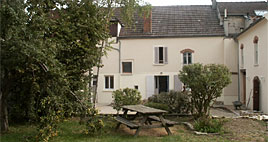

|
Mardi, 14 Décembre 2010 14:28 |
|  |
Qui est concerné :
Les jeunes adultes âgés de 18 ans :
1. Issus du Service Accueil Adolescents de l’E.P.M.S. ou du Service Accueil Hébergement.
2. En attente d’une orientation en milieu protégé
|
|
 |
|
L'unité d'accompagnement |
|
|
Les missions
1. Maintenir et développer les acquis personnels et professionnels
2. Assurer le suivi de projet personnalisé des usagers
3. Accompagner vers une orientation adaptée et pérenne
Les moyens
1. Les missions que se donne cette unité ne peuvent aboutir sans un travail en partenariat. Celui-ci peut être interne à l’établissement (telle l’unité de stage) mais aussi en lien avec des partenaires extérieurs (ex. autres établissements, Familles…)
2. Développer et proposer des outils et supports facilitant les apprentissages
3. Proposer des stages adaptés à l’orientation future
|
|
|
|
Mise à jour le Vendredi, 11 Février 2011 18:20 |